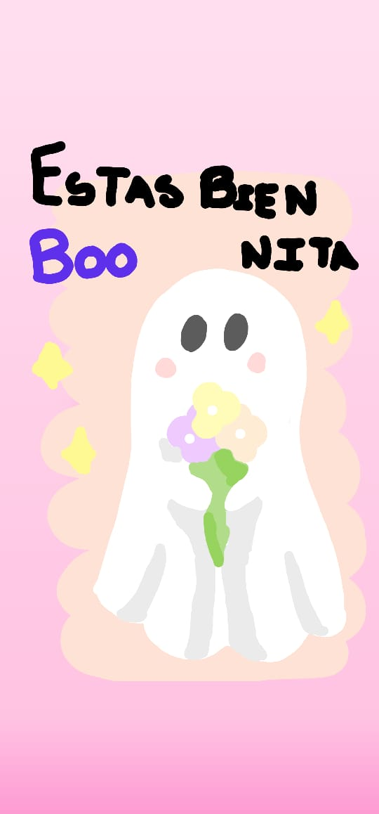

El Día que lo Supe

Supe que estaba enamorado de ti el día que tu sonrisa comenzó a parecerme lo más bello que había visto. Cuándo tus ojitos me miraban y me emocionaba de golpe por pensar que me observaban.
Las veces en las que te mandaba un audio y me respondías con una gran risa o me confesabas lo mucho que te había gustado. Esos momentos dónde me enviabas una foto tuya, y yo no podía parar de mirarla por pensar en lo hermosa que eres. Supe que estaba enamorado de ti el día que te vi interactuar con las personas y observar lo increíblemente dulce que eres con quienes te rodean. Todas las veces donde te vi ser la mujer más extraordinaria, más responsable y comprometida con el bienestar de los que te rodean. Cada vez que te vi superar el cansancio, los bochornos, los problemas y plantearte metas a futuro. Me enamoré de ti el día que te comprometiste a trabajar por este amor en conjunto y proponerme uno de los planes más hermosos que nadie jamás ha hecho antes. Formar una vida, y una familia juntos.